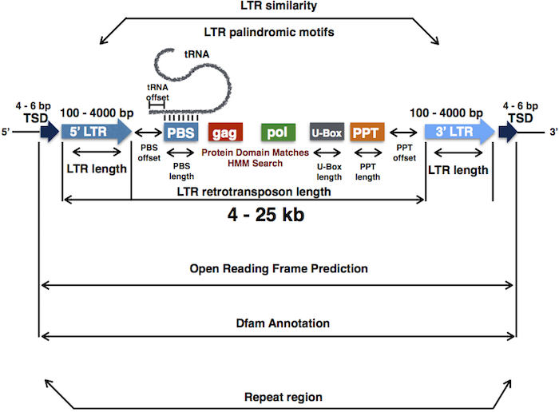

An easy way to perform de novo functional annotation of LTR retrotransposons from any genome assembly in fasta format.

Users can consult a comprehensive Introduction to the LTRpred pipeline to get familiar with the tool.
Install prerequisite CRAN and Bioconductor packages:
install.packages(c("tidyverse", "data.table", "seqinr", "biomartr", "dtplyr", "devtools"))
if (!requireNamespace("BiocManager", quietly = TRUE))
install.packages("BiocManager")
BiocManager::install()
BiocManager::install(c("rtracklayer", "GenomicFeatures", "biomaRt"))
devtools::install_github("HajkD/metablastr", build_vignettes = TRUE, dependencies = TRUE)
install.packages(c("BSDA", "ggrepel", "gridExtra")) Now users may install LTRpred as follows:
The fastest way to generate a LTR retrotransposon prediction for a genome of interest (after installing all prerequisite command line tools) is to use the LTRpred() function and relying on the default parameters. In the following example, a LTR transposon prediction is performed for parts of the Human Y chromosome.
# load LTRpred package
library(LTRpred)
# de novo LTR transposon prediction for the Human Y chromosome
LTRpred(genome.file = system.file("Hsapiens_ChrY.fa", package = "LTRpred"))When running your own genome, please specify genome.file = "path/to/your/genome.fasta instead of system.file(..., package = "LTRpred"). The command system.file(..., package = "LTRpred") merely references the path to the example file stored in the LTRpred package itself.
The LTRpred package is not formally published yet, but a manuscript is in preparation. For now, please cite one of the the following paper when using LTRpred for your own research. LTRpred is part of these studies and helped to predict potentially active retrotransposons that were later confirmed experimentally.
M Benoit, HG Drost, M Catoni, Q Gouil, S Lopez-Gomollon, DC Baulcombe, J Paszkowski. Environmental and epigenetic regulation of Rider retrotransposons in tomato. PloS Genetics, 15(9): e1008370 (2019).
or
J Cho, M Benoit, M Catoni, HG Drost, A Brestovitsky, M Oosterbeek and J Paszkowski. Sensitive detection of pre-integration intermediates of LTR retrotransposons in crop plants. Nature Plants, 5, 26-33 (2019).
This tutorial introduces users to LTRpred:
Users can also read the tutorials within (RStudio) :
LTRpred to annotate functional retrotransposons
J Cho, M Benoit, M Catoni, HG Drost, A Brestovitsky, M Oosterbeek and J Paszkowski. Sensitive detection of pre-integration intermediates of LTR retrotransposons in crop plants. Nature Plants, 5, 26-33 (2019).
M Benoit, HG Drost, M Catoni, Q Gouil, S Lopez-Gomollon, DC Baulcombe, J Paszkowski. Environmental and epigenetic regulation of Rider retrotransposons in tomato. PloS Genetics (2019) (in press).
E Cerruti, C Gisbert, HG Drost, D Valentino, E Portis, L Barchi, J Prohens, S Lanteri, C Comino, M Catoni. Epigenetic bases of grafting-induced vigour in eggplant. bioaRxiv (2019).
Nguinkal et al. The First Highly Contiguous Genome Assembly of Pikeperch (Sander lucioperca), an Emerging Aquaculture Species in Europe Genes, 0(9), 708 (2019).
I would be very happy to learn more about potential improvements of the concepts and functions provided in this package.
Furthermore, in case you find some bugs or need additional (more flexible) functionality of parts of this package, please let me know:
https://github.com/HajkD/LTRpred/issues
In the LTRpred framework users can find:
LTRpred on entire kingdoms of life using only one command (see ?LTRpred.meta)LTRpred() : Major pipeline to predict LTR retrotransposons in a given genomeLTRpred.meta : Perform Meta-Analyses with LTRpredmeta.summarize() : Summarize (concatenate) all predictions of a LTRpred.meta() runmeta.apply() : Apply functions to meta data generated by LTRpred()
LTRharvest() : Run LTRharvest to predict putative LTR RetrotransposonsLTRdigest() : Run LTRdigest to predict putative LTR RetrotransposonsCLUSTpred() : Cluster Sequences with VSEARCHcluster.members() : Select members of a specific clusterclust2fasta() : Export sequences of TEs belonging to the same cluster to fasta filesAllPairwiseAlign() : Compute all pairwise (global) alignments with VSEARCHfilter.uc() : Filter for cluster membersSimMatAbundance() : Compute histogram shape similarity between speciesfilter.jumpers() : Detect LTR retrotransposons that are potential jumperstidy.datasheet() : Select most important columns of ‘LTRpred’ output for further analyticsread.prediction() : Import the output of LTRharvest or LTRdigestread.tabout() : Import information sheet returned by LTRdigestread.orfs() : Read output of ORFpred()
read.seqs() : Import sequences of predicted LTR transposonsread.ltrpred() : Import the data sheet file generated by LTRpred()
read.uc() : Read file in USEARCH cluster formatread.blast6out() : Read file in blast6out format generated by USEARCH or VSEARCHpred2bed() : Format LTR prediction data to BED file formatpred2fasta() : Save the sequence of the predicted LTR Transposons in a fasta filepred2gff() : Format LTR prediction data to GFF3 file formatpred2annotation() : Match LTRharvest, LTRdigest, or LTRpred prediction with a given annotation file in GFF3 formatpred2csv() : Format LTR prediction data to CSV file formatORFpred() : Open Reading Frame prediction in putative LTR transposonsdfam.query() : Annotation of de novo predicted LTR transposons via Dfam searchesread.dfam() : Import Dfam Query Outputrepbase.clean() : Clean the initial Repbase database for BLASTrepbase.query() : Query the RepBase to annotate putative LTRsrepbase.filter() : Filter the Repbase query outputmotif.count() : Low level function to detect motifs in stringsplot_ltrsim_individual() : Plot the age distribution of predicted LTR transposonsplot_ltrwidth_individual() : Plot the width distribution of putative LTR transposons or LTRs for individual speciesplot_ltrwidth_species() : Plot the width distribution of putative LTR transposons or LTRs for all speciesplot_ltrwidth_kingdom() : Plot the width distribution of putative LTR transposons or LTRs for all kingdomsplot_copynumber_individual() : Plot the copy number distribution of putative LTR transposons or LTRs for individual speciesplot_copynumber_species() : Plot the copy number distribution of putative LTR transposons or LTRs for all speciesplot_copynumber_kingdom() : Plot the copy number distribution of putative LTR transposons or LTRs for all kingdomsplotLTRRange() : Plot Genomic Ranges of putative LTR transposonsPlotSimCount() : Plot LTR Similarity vs. predicted LTR countplotSize() : Plot Genome size vs. LTR transposon countplotSizeJumpers() : Plot Genome size vs. LTR transposon count for jumpersplotFamily() : Visualize the Superfamily distribution of predicted LTR retrotransposonsplotDomain() : Visualize the Protein Domain distribution of predicted LTR retrotransposonsplotCN() : Plot correlation between LTR copy number and methylation contextplotCluster() : Plot correlation between Cluster Number and any other variablePlotInterSpeciesCluster() : Plot inter species similarity between TEs (for a specific cluster)PlotMainInterSpeciesCluster() : Plot inter species similarity between TEs (for the top n clusters)bcolor() : Beautiful colors for plotsfile.move() : Move folders from one location to anotherget.pred.filenames() : Retrieve file names of files genereated by LTRpredget.seqs() : Quickly retrieve the sequences of a ‘Biostrings’ objectws.wrap.path() : Wrap whitespace in pathsrename.fasta() : rename.fastaI would like to thank the Paszkowski team for incredible support and motivating discussions that led to the realization of this project.